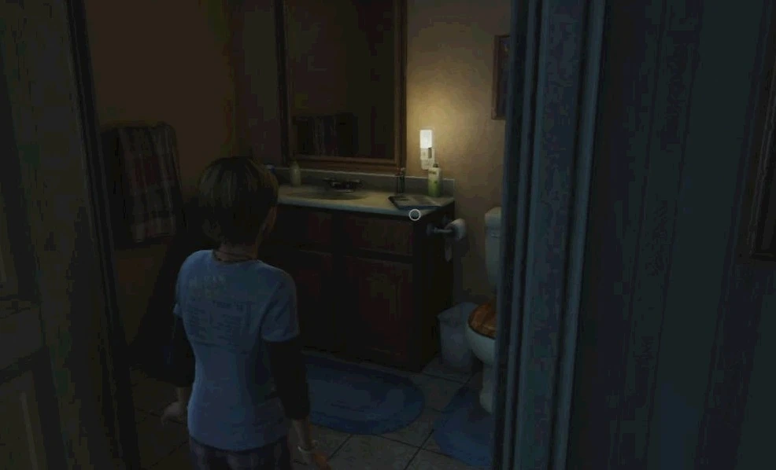

содержание
Родной город
Родной город
Глава
Глава

Дом Сары и ДжоэлаСезон: весна
Локация:
Остин, Техас, США
Персонажи:
Джоэл, Сара, Томми, Кейт (упом.), Лори Гилберт, Джимми Куперс, Луис (упом.)
Мультиплеер
Артефакты:
0
Учебники:
0
Комиксы:
0
Медальоны «Цикад»:
0
Хронология
Предыдущая глава:
N/A
Следующая глава:
Карантинная Зона
«Родной город» - пролог в Одни из Нас (англ. The Last of Us).
Игра начинается со знакомства с главным персонажем Джоэлом - отцом одиночкой, живущего в округе Остин, Техас, со своей дочерью Сарой. Вернувшись поздно ночью домой, он разговаривает со своим братом Томми, обсуждая рабочие вопросы. В это время, Сара спала на диване, и как-то только он располагается рядом, она дарит ему подарок - новые наручные часы в честь его дня Рождения. Спустя час-полтора, Джоэл относит свою вновь уснувшую дочь в свою комнату. Ещё позднее, Сара просыпается от звонка телефона, и как оказывается, это её дядя Томми, ищущий её отца. Но линия быстро обрывается и сеть перестаёт работать. Сара встаёт с кровати и начинает обходить дом.
Перед выходом из комнаты, Сара находит открытку, которую она сделала отцу, но забыла подарить. Далее Сара отправляется в ванную комнату, где находит газету, датированную 26-ым сентября 2013 года, с заголовком, посвящённым невероятному количеству инфицированных людей, поступивших в местные больницы. Когда Сара заходит в комнату папы, включённый телевизор транслирует репортаж с места чрезвычайного события, раскрывающий тему инфекции, когда неожиданно, позади репортёра взрывается газовый трубопровод, прерывая трансляцию. Из окна комнаты Сара может наблюдать этот взрыв. Уже в страхе, Сара спускается на первый этаж, где наблюдает колонну полицейских машин с сиреной, направляющуюся на вызов. На кухне Сара берет в руки телефон отца, на котором обнаруживает восемь пропущенных звонков и одно смс-сообщение от дяди Томми. Она также находит записку на холодильнике, в которой Джоэл сообщает, что будет поздно и разрешает ей заказать еды (скорее всего предыдущий день). Зайдя в очередную комнату, она видит отца, заходящего в дом с заднего двора; нервного, покрытого кровью. Он говорит ей, что что-то не так с Куперсами - их соседями. В момент, пока Джоэл достаёт свой револьвер, через стеклянную дверь врывается Джимми Куперс, издавая истошные крики. Джоэл закрывает Сару собой, крича, чтобы сумасшедший не приближался, однако тот словно и вовсе не слышит его. В попытке атаковать, он получает смертельный выстрел.
Спустя пару минут, к дому подъезжает Томми. Забравшись всей семьёй в машину, они пытаются выбраться из города, становясь свидетелями весьма ужасных событий. Томми пытается прокомментировать происходящее, что в городе все как будто с ума посходили от какого-то типа инфекции, и что, возможно, это происходит и в других городах. По дороге из города, они встают в огромную пробку напротив городской больницы. Не успев принять следующий план действий, они видят как один из пациентов выбегает на дорогу к ближайшей машине и атакует водителя, покинувшего машину, чтобы выяснить в чем задержка. Делая полный разворот, автомобиль героев мчится прочь. В поиске обходного пути через центральные улицы города, они попадают в сильную аварию, где им уже приходится проделывать дальнейший путь на ногах. Однако у Сары сломана нога, что вынуждает Джоэла передать револьвер Томми, а самому взять на руки дочь. Пытаясь выбраться из города, они вбегают в аллею где Томми, умело орудуя оружием, очищает переулок от заражённых. Дальнейший их путь лежит через бар, однако наплыв заражённых вынуждает Томми сдерживать дверь, чтобы выиграть время для своих родных на побег.
Продолжая бежать, будучи всё-таки преследуемый заражёнными, Джоэл мчится к мосту, ведущего прочь из города. Возникший перед Джоэлом солдат убивает преследователей, однако продолжает держать оружие уже в сторону героев. Мгновения спустя, боец получает приказ уничтожить обоих, чтобы исключить возможность распространения инфекции. Пытаясь прикрыть дочь от пуль, Джоэл падает в кювет, теряя её из виду. Подбежав к Джоэлу, тот был готов сделать контрольный выстрел, но сам получает выстрел в голову от подоспевшего Томми. Джоэл добирается до своей дочки и обнаруживает, что она получила серьёзное ранение в область живота. Вне себя от горя, он пытается успокоить дочь, но вскоре она умирает у него на руках.
Глава «Родной город» содержит следующие предметы коллекционирования:
Сюжет
Пролог
Игра начинается со знакомства с главным персонажем Джоэлом - отцом одиночкой, живущего в округе Остин, Техас, со своей дочерью Сарой. Вернувшись поздно ночью домой, он разговаривает со своим братом Томми, обсуждая рабочие вопросы. В это время, Сара спала на диване, и как-то только он располагается рядом, она дарит ему подарок - новые наручные часы в честь его дня Рождения. Спустя час-полтора, Джоэл относит свою вновь уснувшую дочь в свою комнату. Ещё позднее, Сара просыпается от звонка телефона, и как оказывается, это её дядя Томми, ищущий её отца. Но линия быстро обрывается и сеть перестаёт работать. Сара встаёт с кровати и начинает обходить дом.
Перед выходом из комнаты, Сара находит открытку, которую она сделала отцу, но забыла подарить. Далее Сара отправляется в ванную комнату, где находит газету, датированную 26-ым сентября 2013 года, с заголовком, посвящённым невероятному количеству инфицированных людей, поступивших в местные больницы. Когда Сара заходит в комнату папы, включённый телевизор транслирует репортаж с места чрезвычайного события, раскрывающий тему инфекции, когда неожиданно, позади репортёра взрывается газовый трубопровод, прерывая трансляцию. Из окна комнаты Сара может наблюдать этот взрыв. Уже в страхе, Сара спускается на первый этаж, где наблюдает колонну полицейских машин с сиреной, направляющуюся на вызов. На кухне Сара берет в руки телефон отца, на котором обнаруживает восемь пропущенных звонков и одно смс-сообщение от дяди Томми. Она также находит записку на холодильнике, в которой Джоэл сообщает, что будет поздно и разрешает ей заказать еды (скорее всего предыдущий день). Зайдя в очередную комнату, она видит отца, заходящего в дом с заднего двора; нервного, покрытого кровью. Он говорит ей, что что-то не так с Куперсами - их соседями. В момент, пока Джоэл достаёт свой револьвер, через стеклянную дверь врывается Джимми Куперс, издавая истошные крики. Джоэл закрывает Сару собой, крича, чтобы сумасшедший не приближался, однако тот словно и вовсе не слышит его. В попытке атаковать, он получает смертельный выстрел.
Спустя пару минут, к дому подъезжает Томми. Забравшись всей семьёй в машину, они пытаются выбраться из города, становясь свидетелями весьма ужасных событий. Томми пытается прокомментировать происходящее, что в городе все как будто с ума посходили от какого-то типа инфекции, и что, возможно, это происходит и в других городах. По дороге из города, они встают в огромную пробку напротив городской больницы. Не успев принять следующий план действий, они видят как один из пациентов выбегает на дорогу к ближайшей машине и атакует водителя, покинувшего машину, чтобы выяснить в чем задержка. Делая полный разворот, автомобиль героев мчится прочь. В поиске обходного пути через центральные улицы города, они попадают в сильную аварию, где им уже приходится проделывать дальнейший путь на ногах. Однако у Сары сломана нога, что вынуждает Джоэла передать револьвер Томми, а самому взять на руки дочь. Пытаясь выбраться из города, они вбегают в аллею где Томми, умело орудуя оружием, очищает переулок от заражённых. Дальнейший их путь лежит через бар, однако наплыв заражённых вынуждает Томми сдерживать дверь, чтобы выиграть время для своих родных на побег.
Продолжая бежать, будучи всё-таки преследуемый заражёнными, Джоэл мчится к мосту, ведущего прочь из города. Возникший перед Джоэлом солдат убивает преследователей, однако продолжает держать оружие уже в сторону героев. Мгновения спустя, боец получает приказ уничтожить обоих, чтобы исключить возможность распространения инфекции. Пытаясь прикрыть дочь от пуль, Джоэл падает в кювет, теряя её из виду. Подбежав к Джоэлу, тот был готов сделать контрольный выстрел, но сам получает выстрел в голову от подоспевшего Томми. Джоэл добирается до своей дочки и обнаруживает, что она получила серьёзное ранение в область живота. Вне себя от горя, он пытается успокоить дочь, но вскоре она умирает у него на руках.
Коллекционные материалы
Глава «Родной город» содержит следующие предметы коллекционирования:
- Артефакты - 0
- Медальоны Цикад - 0
- Справочники - 0
- Комиксы - 0
Интересные факты
- Сара подарила Джоэлу наручные часы, с которыми он не расстанется за весь ход игры.
- После того как Томми убивает солдата, ствол револьвера выглядит длиннее.
- Если приглядеться, то можно обнаружить PS3,на полке, под телевизором.
- В спальне Сары можно обнаружить семейное фото, которое будет задействовано в дальнейших главах.
- Сцена картины, находящаяся над кроватью Джоэла, будет знакома игрокам, которые начнут переигрывать игру в "Новая игра +". Действительно, многие предметы и картины намекают на дальнейшие сцены или диалоги героев, что является бонусом для игроков, проходящие игру по второму кругу.
- За всю игру, это единственный раз когда игрок сможет играть за Сару.
- В главе есть небольшая ошибка: в патрульных машинах нет водителей.
- Когда Сара спустится в зал на первом этаже, часы, на которые она смотрела во время первого ролика, отсчитывают секунды (единственные в игре), однако с ходом секундной стрелки, минутная остаётся на том же месте - 2:15.
- Собака, лающая во дворе, на которую вскоре нападёт Джимми, возможно принадлежит Саре и Джоэлу.